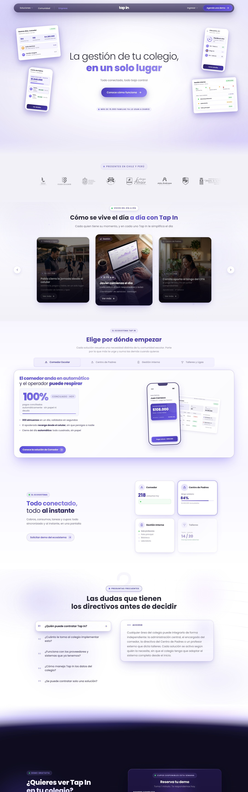

<title>Hero Tap In</title>
<meta name="claude:viewport-fit-sides" content="cover">
<link rel="preconnect" href="https://fonts.googleapis.com">
<link rel="preconnect" href="https://fonts.gstatic.com" crossorigin>
<link rel="stylesheet" href="https://fonts.googleapis.com/css2?family=Geist:wght@400;500&family=Geist+Mono:wght@400&family=Inter:ital,wght@1,300&family=Poppins:wght@300;400;600&display=swap">
<style>
    /* Comparador de tres heros para el caso Tap In: la escena real a pantalla completa (con el zoom al bajar)
       y un selector flotante; abajo, el diagnóstico y qué cambia en cada propuesta.
       Un solo aspecto oscuro a propósito: el hero es morado y el marco es el de Agustín Design */
    :root {
        --noche: #100D20;
        --tinta: #F4F3FB;
        --gris: rgba(238, 237, 254, 0.66);
        --linea: rgba(155, 142, 240, 0.22);
        --empresa: #2D2560; --campus: #4A3CAE; --connect: #6B5CE7; --health: #9B8EF0;
        --f-marca: 'Poppins', system-ui, sans-serif;
        --f-texto: 'Geist', system-ui, sans-serif;
        --f-mono: 'Geist Mono', ui-monospace, monospace;
        --margen: clamp(20px, 3.2vw, 48px);
        --ease: cubic-bezier(0.16, 1, 0.3, 1);
        color-scheme: dark;
    }
    * { box-sizing: border-box; }
    body { margin: 0; background: var(--noche); color: var(--tinta); font: 15px/1.5 var(--f-texto); -webkit-font-smoothing: antialiased; overflow-x: hidden; }
    .mono { font-family: var(--f-mono); font-size: 12px; letter-spacing: 0.01em; }

    /* --- ESCENA --- */
    /* Pista alta con panel fijo; --h es el avance suavizado del zoom (lo calcula el script) */
    .escena { --h: 0; position: relative; height: 260svh; }
    .fijo { position: sticky; top: 0; height: 100svh; overflow: hidden; }
    .fondo { position: absolute; inset: 0; background: radial-gradient(60% 55% at 78% 22%, #8E81F5, transparent 70%), radial-gradient(120% 100% at 50% 0%, var(--connect), var(--campus) 52%, var(--empresa)); }
    .fondo::after { content: ''; position: absolute; inset: 0; opacity: 0.5; mix-blend-mode: soft-light; background-size: 180px; background-image: url("data:image/svg+xml,%3Csvg xmlns='http://www.w3.org/2000/svg' width='180' height='180'%3E%3Cfilter id='g'%3E%3CfeTurbulence type='fractalNoise' baseFrequency='0.85' numOctaves='3' stitchTiles='stitch'/%3E%3CfeColorMatrix values='0 0 0 0 0.5  0 0 0 0 0.5  0 0 0 0 0.5  0 0 0 0.6 0'/%3E%3C/filter%3E%3Crect width='100%25' height='100%25' filter='url(%23g)'/%3E%3C/svg%3E"); }

    /* La barra del sitio, como se verá en el caso */
    .barra { position: absolute; top: 0; left: 0; right: 0; z-index: 5; display: grid; grid-template-columns: 1fr auto 1fr; align-items: center; padding: 18px max(var(--margen), env(safe-area-inset-right, 0px)) 0 max(var(--margen), env(safe-area-inset-left, 0px)); color: #FFFFFF; }
    .barra b { font-weight: 500; font-size: 16px; letter-spacing: -0.035em; }
    .barra b span { opacity: 0.45; }
    .barra ul { display: flex; gap: 44px; margin: 0; padding: 0; list-style: none; font: italic 300 17px 'Inter', sans-serif; letter-spacing: -0.045em; }
    .barra .der { justify-self: end; }

    /* El navegador vive a pantalla completa y se dibuja en perspectiva; al bajar se endereza y crece */
    .mundo { position: absolute; inset: 0; z-index: 1; perspective: var(--persp, 1800px); perspective-origin: 50% 40%; }
    .nav { position: absolute; inset: 0; display: flex; flex-direction: column; overflow: hidden; background: #FFFFFF; transform-origin: 50% 50%;
        transform: translate3d(calc((1 - var(--h)) * var(--tx)), calc((1 - var(--h)) * var(--ty)), 0)
                   rotateX(calc((1 - var(--h)) * var(--rx))) rotateY(calc((1 - var(--h)) * var(--ry))) rotateZ(calc((1 - var(--h)) * var(--rz)))
                   scale(calc(var(--s) + var(--h) * (1 - var(--s))));
        border-radius: calc(16px * (1 - var(--h)) / var(--s));
        box-shadow: 0 calc(80px * (1 - var(--h))) calc(140px * (1 - var(--h))) calc(-40px * (1 - var(--h))) rgba(14, 9, 50, 0.75);
        will-change: transform; }
    .nav-barra { display: flex; align-items: center; gap: 8px; height: 40px; flex: none; padding: 0 18px; background: #F2F1F8; border-bottom: 1px solid rgba(45, 37, 96, 0.08); }
    .nav-barra i { width: 12px; height: 12px; border-radius: 50%; background: #D9D6EA; }
    .nav-barra span { margin: 0 auto; padding: 5px 56px; border-radius: 8px; background: #FFFFFF; font: 13px var(--f-mono); color: #5E5C72; }
    .pantalla { position: relative; flex: 1; overflow: hidden; }
    .pantalla img { display: block; width: 100%; animation: recorre 70s cubic-bezier(0.45, 0, 0.55, 1) 1.2s infinite alternate; }
    @keyframes recorre { to { transform: translateY(calc(-100% + 100svh - 40px)); } }
    /* Reflejo suave sobre el vidrio mientras está inclinado */
    .nav::after { content: ''; position: absolute; inset: 0; pointer-events: none; background: linear-gradient(115deg, rgba(255, 255, 255, 0.22), transparent 38%); opacity: calc(1 - var(--h) * 1.6); }

    /* --- TEXTO --- */
    .txt { position: absolute; z-index: 3; display: flex; flex-direction: column; gap: 20px; opacity: calc(1 - var(--h) * 2.2); transform: translateY(calc(var(--h) * -10svh)); }
    .txt .mono { color: rgba(255, 255, 255, 0.78); display: flex; gap: 10px; flex-wrap: wrap; }
    .txt .mono i { font-style: normal; opacity: 0.5; }
    h1 { margin: 0; width: var(--wm); }
    .wm { display: block; width: 100%; aspect-ratio: 389.87 / 150.6; background: #FFFFFF; -webkit-mask: url('wordmark.svg') center / contain no-repeat; mask: url('wordmark.svg') center / contain no-repeat; }
    .lema { margin: 0; max-width: 25ch; font: 300 clamp(19px, 1.65vw, 26px) / 1.28 var(--f-marca); letter-spacing: -0.02em; text-wrap: balance; }
    .lema b { font-weight: 600; }
    .vivo { align-self: flex-start; display: inline-flex; align-items: center; gap: 8px; color: #FFFFFF; text-decoration: none; border-bottom: 1px solid rgba(255, 255, 255, 0.35); padding-bottom: 2px; }
    .pista { position: absolute; z-index: 3; display: flex; align-items: center; gap: 12px; color: rgba(255, 255, 255, 0.85); opacity: calc(0.9 - var(--h) * 2.4); }
    .pista i { display: grid; place-items: center; width: 36px; height: 36px; border-radius: 50%; border: 1px solid rgba(255, 255, 255, 0.4); font-style: normal; animation: pista 1.8s var(--ease) infinite; }
    @keyframes pista { 50% { translate: 0 6px; } }
    .entra .txt > *, .entra .nav { animation: entra 1000ms var(--ease) both; }
    .entra .txt > :nth-child(2) { animation-delay: 80ms; } .entra .txt > :nth-child(3) { animation-delay: 160ms; } .entra .txt > :nth-child(4) { animation-delay: 240ms; }
    @keyframes entra { from { opacity: 0; translate: 0 40px; } }

    /* =======================================================
       LAS TRES PROPUESTAS
       ======================================================= */
    /* A · Perspectiva lateral: texto a la izquierda en la grilla, el navegador gira hacia el texto y se sale por la derecha */
    [data-v="a"] { --tx: 19vw; --ty: 4svh; --rx: 7deg; --ry: -28deg; --rz: 0deg; --s: 0.62; --persp: 1500px; --wm: min(25vw, 380px); }
    [data-v="a"] .txt { left: var(--margen); bottom: 12svh; }
    [data-v="a"] .pista { left: var(--margen); bottom: 4.5svh; }
    /* B · Desde la mesa: composición centrada; el sitio sube recostado desde abajo, como un producto sobre la mesa */
    [data-v="b"] { --tx: 0vw; --ty: 36svh; --rx: 38deg; --ry: 0deg; --rz: 0deg; --s: 0.74; --persp: 1400px; --wm: min(22vw, 340px); }
    [data-v="b"] .txt { left: 50%; top: 13svh; align-items: center; text-align: center; translate: -50% 0; }
    [data-v="b"] .txt .mono { justify-content: center; }
    [data-v="b"] .lema { max-width: 30ch; }
    [data-v="b"] .vivo { align-self: center; }
    [data-v="b"] .pista { right: var(--margen); bottom: 4.5svh; }
    /* C · Isométrico: el sitio completo como una lámina en isométrica que entra desde la esquina */
    [data-v="c"] { --tx: 24vw; --ty: 14svh; --rx: 50deg; --ry: 0deg; --rz: -30deg; --s: 0.66; --persp: 3200px; --wm: min(27vw, 420px); }
    [data-v="c"] .txt { left: var(--margen); top: 22svh; }
    [data-v="c"] .pista { left: var(--margen); bottom: 4.5svh; }

    /* --- SELECTOR FLOTANTE --- */
    .selector { position: fixed; left: 50%; bottom: calc(18px + env(safe-area-inset-bottom, 0px)); z-index: 20; display: flex; gap: 4px; padding: 5px; border-radius: 999px; background: rgba(16, 13, 32, 0.78); border: 1px solid rgba(255, 255, 255, 0.14); backdrop-filter: blur(14px); -webkit-backdrop-filter: blur(14px); translate: -50% 0; box-shadow: 0 20px 50px -20px rgba(0, 0, 0, 0.6); }
    .selector button { display: flex; align-items: center; gap: 8px; padding: 9px 16px; border: 0; border-radius: 999px; background: transparent; color: rgba(255, 255, 255, 0.72); font: 500 14px var(--f-texto); white-space: nowrap; cursor: pointer; transition: background-color 200ms, color 200ms; }
    .selector button b { font: 400 11px var(--f-mono); opacity: 0.7; }
    .selector button[aria-pressed="true"] { background: #FFFFFF; color: var(--noche); }
    .selector button:focus-visible { outline: 2px solid var(--health); outline-offset: 2px; }
    @media (hover: hover) { .selector button:not([aria-pressed="true"]):hover { color: #FFFFFF; background: rgba(255, 255, 255, 0.08); } }

    /* --- DIAGNÓSTICO Y PROPUESTAS --- */
    .notas { padding-block: clamp(80px, 10vw, 140px) 140px; padding-left: max(var(--margen), env(safe-area-inset-left, 0px)); padding-right: max(var(--margen), env(safe-area-inset-right, 0px)); display: grid; grid-template-columns: repeat(12, 1fr); column-gap: 16px; row-gap: 72px; }
    .notas h2 { grid-column: 1 / span 3; margin: 0; font: 400 12px var(--f-mono); color: var(--gris); padding-top: 6px; }
    .bloque { grid-column: 4 / -1; min-width: 0; }
    .bloque > p:first-child { margin: 0 0 28px; max-width: 34ch; font: 600 clamp(26px, 2.6vw, 40px) / 1.1 var(--f-marca); letter-spacing: -0.035em; text-wrap: balance; }
    .lista { margin: 0; padding: 0; list-style: none; border-top: 1px solid var(--linea); }
    .lista li { display: grid; grid-template-columns: minmax(0, 1fr) minmax(0, 1.4fr); gap: 24px; padding: 16px 0; border-bottom: 1px solid var(--linea); }
    .lista li span:first-child { color: var(--gris); }
    .ops { display: grid; grid-template-columns: repeat(3, minmax(0, 1fr)); gap: 16px; }
    .op { display: flex; flex-direction: column; gap: 12px; padding: 22px; border-radius: 20px; border: 1px solid var(--linea); background: rgba(238, 237, 254, 0.03); text-align: left; color: inherit; font: inherit; cursor: pointer; transition: border-color 200ms, background-color 200ms; }
    .op[aria-pressed="true"] { border-color: var(--health); background: rgba(155, 142, 240, 0.08); }
    .op .mono { color: var(--health); }
    .op strong { font: 600 22px / 1.1 var(--f-marca); letter-spacing: -0.03em; }
    .op p { margin: 0; color: var(--gris); }
    .op .rec { align-self: flex-start; padding: 4px 10px; border-radius: 999px; background: var(--health); color: var(--noche); font: 500 11px var(--f-mono); }
    .op:focus-visible { outline: 2px solid var(--health); outline-offset: 3px; }
    @media (hover: hover) { .op:hover { border-color: rgba(155, 142, 240, 0.5); } }

    /* --- MÓVIL --- */
    @media (max-width: 768px) {
        .barra ul { display: none; }
        .barra { grid-template-columns: 1fr auto; }
        [data-v] .txt { left: var(--margen); right: var(--margen); top: 84px; bottom: auto; gap: 14px; translate: none; align-items: flex-start; text-align: left; }
        [data-v] .txt .mono { justify-content: flex-start; }
        [data-v] .vivo { align-self: flex-start; }
        [data-v] .pista { display: none; }
        [data-v="a"] { --tx: 8vw; --ty: 27svh; --rx: 6deg; --ry: -18deg; --s: 0.8; --wm: 46vw; }
        [data-v="b"] { --ty: 30svh; --rx: 32deg; --s: 0.88; --wm: 46vw; }
        [data-v="c"] { --tx: 14vw; --ty: 22svh; --rx: 46deg; --rz: -26deg; --s: 0.86; --wm: 46vw; }
        .lema { font-size: 18px; }
        .selector button { padding: 8px 11px; font-size: 13px; }
        .selector button span { display: none; }
        .notas { grid-template-columns: 1fr; row-gap: 48px; }
        .notas h2, .bloque { grid-column: 1 / -1; }
        .lista li { grid-template-columns: 1fr; gap: 4px; }
        .ops { grid-template-columns: 1fr; }
    }
    @media (prefers-reduced-motion: reduce) {
        .pantalla img, .pista i, .entra .txt > *, .entra .nav { animation: none; }
    }
</style>

<section class="escena" data-v="a" id="escena" aria-label="Hero del caso Tap In">
    <div class="fijo">
        <div class="fondo" aria-hidden="true"></div>
        <header class="barra"><b>agustín<span>.</span>design</b><ul><li>About</li><li>Works</li><li>Contact</li></ul><span class="der mono">← Índice</span></header>
        <div class="mundo" aria-hidden="true">
            <div class="nav">
                <div class="nav-barra"><i></i><i></i><i></i><span>tapin.cl</span></div>
                <div class="pantalla"></div>
            </div>
        </div>
        <div class="txt">
            <span class="mono">Caso 02 <i>·</i> Marca, producto y web <i>·</i> 2025–26</span>
            <h1 aria-label="Tap In"><span class="wm"></span></h1>
            <p class="lema">De la cafetería del <b>campus</b> a la plataforma del <b>colegio</b></p>
            <a class="vivo mono" href="https://tapin.cl" target="_blank" rel="noopener">tapin.cl en producción ↗</a>
        </div>
        <span class="pista mono" aria-hidden="true"><i>↓</i>Baja para entrar al sitio</span>
    </div>
</section>

<nav class="selector" aria-label="Propuestas de hero">
    <button type="button" id="sel-a" data-ir="a" aria-pressed="true"><b>A</b><span>Perspectiva lateral</span></button>
    <button type="button" id="sel-b" data-ir="b" aria-pressed="false"><b>B</b><span>Desde la mesa</span></button>
    <button type="button" id="sel-c" data-ir="c" aria-pressed="false"><b>C</b><span>Isométrico</span></button>
</nav>

<main class="notas">
    <h2>Diagnóstico</h2>
    <div class="bloque">
        <p>El zoom al bajar se queda tal cual. Lo que cambia es todo lo que lo rodea.</p>
        <ul class="lista">
            <li><span>Dos filas de texto chico arriba (barra y datos del caso) compiten</span><span>Los datos del caso bajan al bloque del título, en una sola línea sobre el wordmark</span></li>
            <li><span>El título, el navegador y la pista no compartían márgenes ni línea base</span><span>Todo se apoya en el margen del sitio y en una misma línea inferior</span></li>
            <li><span>La cápsula "En producción" sobraba</span><span>Se quita; queda un enlace discreto "tapin.cl en producción" bajo el lema</span></li>
            <li><span>El mockup chico de las dos pantallas distraía del sitio</span><span>Se quita: el sitio es el único protagonista</span></li>
            <li><span>Lema en peso medio y con punto final</span><span>Poppins Light, sin punto, con "campus" y "colegio" en negrita: el giro del proyecto en dos palabras</span></li>
            <li><span>Navegador plano, de frente</span><span>En perspectiva e inclinado; al bajar se endereza mientras crece, así el zoom además "entra" al sitio</span></li>
        </ul>
    </div>
    <h2>Propuestas</h2>
    <div class="bloque">
        <p>Tres maneras de inclinar el sitio. Elige con el selector y baja para ver el zoom.</p>
        <div class="ops">
            <button type="button" class="op" id="op-a" data-ir="a" aria-pressed="true"><span class="mono">A · Perspectiva lateral</span><strong>El sitio mira al título</strong><p>El texto se queda en la grilla a la izquierda y el navegador gira hacia él, saliéndose por la derecha. Es la más cercana a lo que ya te gusta: al bajar solo gira y crece.</p><span class="rec">Recomendada</span></button>
            <button type="button" class="op" id="op-b" data-ir="b" aria-pressed="false"><span class="mono">B · Desde la mesa</span><strong>Lanzamiento de producto</strong><p>Título centrado arriba y el sitio recostado que sube desde abajo, como un producto sobre la mesa. Más ceremonial; al bajar se levanta y llena la pantalla.</p></button>
            <button type="button" class="op" id="op-c" data-ir="c" aria-pressed="false"><span class="mono">C · Isométrico</span><strong>La lámina de Behance</strong><p>El sitio completo en isométrica, entrando desde la esquina. Es la más gráfica y la que más se ve a portafolio; al bajar se aplana y se vuelve pantalla.</p></button>
        </div>
    </div>
</main>

<script>
    /* =======================================================
       INICIO JS · COMPARADOR DE HEROS
       ======================================================= */
    /* Avance de la escena con una curva suave, y cambio de propuesta desde el selector o las tarjetas */
    (function () {
        const escena = document.getElementById('escena');
        const quieto = window.matchMedia('(prefers-reduced-motion: reduce)').matches;
        const curva = t => (t < 0.5 ? 4 * t * t * t : 1 - Math.pow(-2 * t + 2, 3) / 2);
        let pendiente = false;
        const pintar = () => {
            pendiente = false;
            const r = escena.getBoundingClientRect();
            const p = Math.min(Math.max(-r.top / (r.height - window.innerHeight), 0), 1);
            escena.style.setProperty('--h', curva(Math.min(p * 1.25, 1)).toFixed(4));
        };
        window.addEventListener('scroll', () => { if (!pendiente) { pendiente = true; requestAnimationFrame(pintar); } }, { passive: true });
        window.addEventListener('resize', pintar);
        const botones = [...document.querySelectorAll('[data-ir]')];
        const elegir = v => {
            escena.dataset.v = v;
            botones.forEach(b => b.setAttribute('aria-pressed', String(b.dataset.ir === v)));
            escena.classList.remove('entra'); void escena.offsetWidth; escena.classList.add('entra');
            try { localStorage.setItem('hero-tapin', v); } catch (e) { /* sin almacenamiento */ }
        };
        botones.forEach(b => b.addEventListener('click', () => {
            elegir(b.dataset.ir);
            if (b.classList.contains('op')) window.scrollTo({ top: 0, behavior: quieto ? 'auto' : 'smooth' });
        }));
        let guardado = null;
        try { guardado = localStorage.getItem('hero-tapin'); } catch (e) { /* sin almacenamiento */ }
        const inicial = ['a', 'b', 'c'].includes(location.hash.slice(1)) ? location.hash.slice(1) : guardado;
        if (inicial) elegir(inicial); else escena.classList.add('entra');
        pintar();
    })();
    /* =======================================================
       FIN JS · COMPARADOR DE HEROS
       ======================================================= */
</script>
